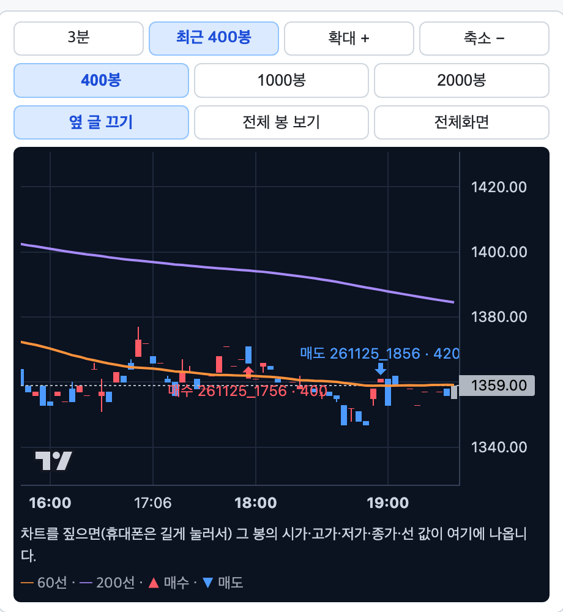
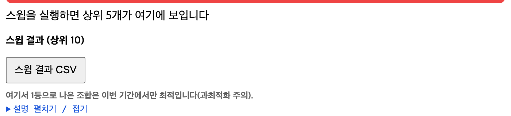

2026년 11월 25일 · 11/25 요청(차트 탭 · 스윕 설명 펼치기/접기)을 반영했습니다

예시 화면입니다. 시험용 매매 표시라 표시 옆 가격이 시세와 다릅니다.
60선(주황)·200선(보라)·눌림 기준선(청록 점선)의 뜻은 그대로이고, 어두운 바탕에서 잘 보이게 조금 밝혔습니다.
예: 매수 261124_1509 · 330 (한국 시각). 지금처럼 봇이 실제로 사고판 자리만 보입니다. 옆 글 끄기로 끌 수 있습니다.
400봉 1000봉 2000봉 — 고른 값은 그 기기에 기억됩니다. 맨 위 글(예: 「최근 400봉」)은 실제로 그린 봉 수입니다.
전체 봉 보기는 모은 봉을 한 화면에 맞춥니다. 전체화면은 차트를 화면 가득 크게 보여 줍니다.
차트를 짚으면(휴대폰은 길게 눌러서) 그 봉의 시각·시가·고가·저가·종가·선 값이 차트 아래 칸에 나옵니다.

「스윕 실행」 단추 아래 모습입니다. 경고 한 줄만 보이고 나머지 설명은 접혀 있습니다.
「여기서 1등으로 나온 조합은 이번 기간에서만 최적입니다(과최적화 주의).」 나머지 긴 설명은 ▶ 설명 펼치기 / 접기를 누르면 보입니다.
「기간 수익률」 설명과 「노란 줄」 설명입니다. 스윕을 돌리면 접힌 채로 나오고, 누르면 펼쳐집니다.
숫자 결과가 들어 있어 접지 않았습니다.
전체화면에서는 아래 탭 줄(홈·차트·백테스터…)이 가려집니다. PC는 Esc 키로도 나옵니다.
전략에 필요한 봉 수(가장 긴 선 기간의 2배)가 고른 값보다 많으면 필요한 만큼 받아 그립니다. 선이 끊기지 않게 하려는 것입니다.
업비트가 10초에 한 번만 받게 해 두어서, 2000봉은 약 1분 30초 동안 차례로 채워집니다.
한 화면에 매수·매도 표시가 많거나, 두 표시가 가까워 글이 겹치면 시각·가격은 숨기고 「매수」「매도」만 남깁니다(겹치면 최근 표시의 글을 남깁니다). 확대하면 다시 보입니다.
궁금한 점이나 생각하신 것과 다른 곳이 있으면 알려 주세요. 답장은 하지 않으셔도 됩니다.